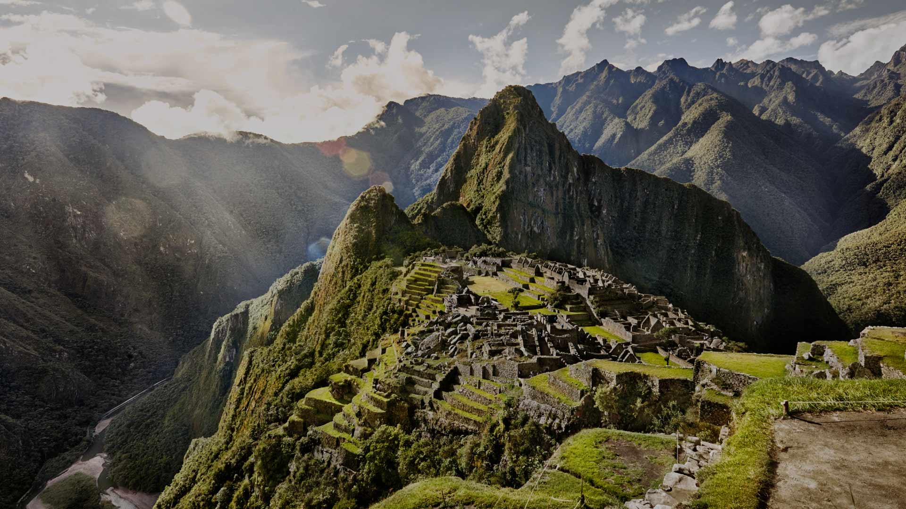

AmericaGo
Perú
Perú es una joya enclavada en la cordillera de los Andes y bordeada por el océano Pacífico, es un país lleno de maravillas culturales, históricas y naturales. Con una herencia que se remonta a las civilizaciones antiguas, como los Incas, y una fusión de influencias indígenas, europeas y asiáticas, Perú es una tierra de contrastes que cautiva a los viajeros. Cusco, la antigua capital inca, sigue siendo un testimonio viviente de la grandeza arquitectónica y cultural del pasado. A poca distancia se encuentra Machu Picchu, la emblemática ciudadela en lo alto de los Andes, rodeada de misterio y esplendor. Las líneas de Nazca, en el desierto, ofrecen enigmas grabados en la tierra que desafían la comprensión.
Piramides Inca

Las Pirámides Incas peruanas, también conocidas como "huacas" en la cultura local, son estructuras arqueológicas imponentes que representan el ingenio y la destreza arquitectónica de la civilización Inca. Aunque no son las pirámides tradicionales como las que se encuentran en Egipto, estas huacas comparten similitudes en su forma escalonada y su propósito ceremonial y religioso. Las pirámides Incas se caracterizan por sus terrazas escalonadas, construidas con piedras cuidadosamente talladas y encajadas sin el uso de mortero. Estas estructuras servían como centros de adoración, lugares de culto y observación astronómica, y a menudo eran utilizadas para ceremonias y rituales relacionados con la naturaleza y el cosmos.
Lineas de Nazca
Las Líneas de Nazca son un enigma arqueológico intrigante ubicado en el desierto de Nazca, en la costa sur de Perú. Estas líneas son gigantescos geoglifos, patrones y figuras trazadas en la superficie del suelo, que solo son claramente visibles desde una gran altura. Estas misteriosas creaciones han desconcertado a los investigadores y viajeros durante décadas debido a su escala, complejidad y el misterio detrás de su propósito. Se cree que las líneas fueron creadas por la cultura Nazca utilizando técnicas de remoción de la capa superior del suelo para exponer la capa más clara debajo. Aunque el propósito exacto de las líneas aún es objeto de debate, algunas teorías sugieren que podrían haber tenido significados astronómicos, religiosos o incluso ser un tipo de calendario agrícola.